⚠️ ВАЖНО: Эта методичка носит информационный характер. Перед применением любых продуктов вблизи глаз рекомендуется консультация офтальмолога или дерматолога, особенно при наличии сухого глаза, глаукомы, чувствительной кожи или беременности.
Раздел 1
Что такое простагландины в сыворотках?
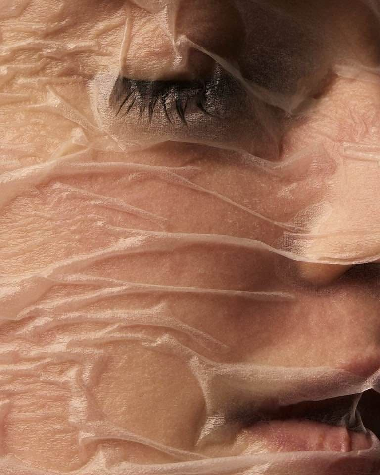
Простагландины — это природные гормоноподобные вещества в организме. В косметике для ресниц используются их синтетические аналоги (простагландиновые аналоги), которые продлевают фазу активного роста ресниц (анаген). Именно они дают самый заметный эффект — более длинные, густые ресницы за 4–8 недель.
Как это работает: Простагландиновые аналоги взаимодействуют с рецепторами в фолликулах ресниц и ИСКУССТВЕННО продлевают фазу роста. Когда вы прекращаете использование — фолликулы возвращаются к своему естественному циклу, и ресницы могут казаться короче/реже, чем до начала использования.
Как распознать простагландин в составе?
Ищите слово с окончанием «PROST» в INCI-названии ингредиентов:
Isopropyl Cloprostenate — наиболее распространённый в косметике
Dechloro Dihydroxy Difluoro Ethylcloprostenolamide — в RevitaLash
Bimatoprost — только в рецептурном Latisse (FDA-одобрен)
Latanoprost, Travoprost, Tafluprost — другие варианты
⚠️ ПРЕДУПРЕЖДЕНИЕ FDA: Isopropyl Cloprostenate относится к тому же классу соединений, что и препараты от глаукомы. FDA выдало официальное предупреждение компании RapidLash за использование этого вещества в косметике без надлежащих предупреждений о побочных эффектах.
Возможные побочные эффекты простагландинов:
Раздражение и покраснение глаз
Гиперпигментация кожи вокруг глаз (потемнение)
Изменение цвета радужки (редко, но необратимо)
Потеря орбитального жира (запавшие глаза) — при длительном применении
СИНДРОМ ОТМЕНЫ: резкое ухудшение состояния ресниц после прекращения
Снижение внутриглазного давления
Противопоказаны при беременности, кормлении, глаукоме, сухом глазе
Раздел 2
Примеры анализа сывороток
← прокрутите таблицу вправо →
Продукт / Бренд
Простагландины?
Эффект отмены
Оценка безопасности
RapidLash Eyelash Enhancing Serum
ДА
ДА
Содержит Isopropyl Cloprostenate. FDA выдала предупреждение. Риск изменения цвета радужки, раздражения.
GrandeLASH-MD
ДА
ДА
Содержит Isopropyl Cloprostenate. Бренд утверждает, что нет побочек, но механизм действия как у простагландинов.
Aphro Celina Corallion
ДА
ДА
Содержит Isopropyl Cloprostenate — аналог простагландина. Эффект отмены при прекращении использования.
LashesMD Eyelash/Eyebrow Conditioner
НЕТ
НЕТ
Безопасная пептидная формула SymPeptide XLash. Нет простагландинов, нет парабенов. Безопасна для чувствительных глаз.
ViveLab Revive Therapy Hair Brow Lash
НЕТ
НЕТ
K-beauty формула без простагландинов. 10 запатентованных ингредиентов, pH 7.0, подходит при сухом глазе и блефарите.
The Ordinary Multi-Peptide Lash & Brow
НЕТ
НЕТ
Полностью безопасная пептидная формула без простагландинов. Подтверждено брендом и дерматологами.
Toplash Lash & Brow Booster
?
?
Производитель заявляет об отсутствии гормонов. Однако ряд покупателей описывает побочки, характерные для простагландинов. Состав требует независимой проверки.
Scalp D Beauté Premium (ANGFA)
НЕТ
НЕТ
Японская пептидно-ботаническая формула без простагландинов. Клинически протестирована. Мягкая и эффективная.
VEGAMOUR GRO Lash Serum
НЕТ
НЕТ
Растительная веганская формула. Karmatin™ — биоидентичный кератин из маша. Без синтетических гормонов.
REVIVE7 Plus Lash Serum
НЕТ
НЕТ
Канадская пептидная формула. Многофакторное воздействие на фолликул. Без простагландинов.
Olaplex Lashbond
НЕТ
НЕТ
Bond-building технология восстанавливает структуру ресницы изнутри. Без простагландинов. Уникальный механизм.
Pronexa Lavish Lash (Eyelash & Brow Serum)
НЕТ
НЕТ
Пептидная формула с Myristoyl Pentapeptide-17 и Biotinoyl Tripeptide-1. Безопасна для длительного применения.
2.1
Aphro Celina Eye Lash Corallion ⚠️ Простагландин
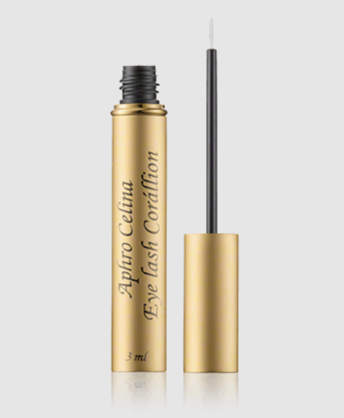
СОСТАВ ПОДТВЕРЖДЁН: Isopropyl Cloprostenate присутствует в составе (подтверждено несколькими европейскими ритейлерами).
ОСТОРОЖНО: Сам бренд открыто указывает «This cosmetic product contains isopropyl cloprostenate, a synthetic prostaglandin analog.» FDA выдало официальное предупреждение.
Проблемный:Isopropyl Cloprostenate — весь драматический эффект достигается за счёт него.
FDA-статус:Официальный Warning Letter от FDA. Запрещён в некоторых странах ЕС.
Рынок:США, часть Европы. В России официально не сертифицирован.
2.3
GrandeLASH-MD ⚠️ Простагландин
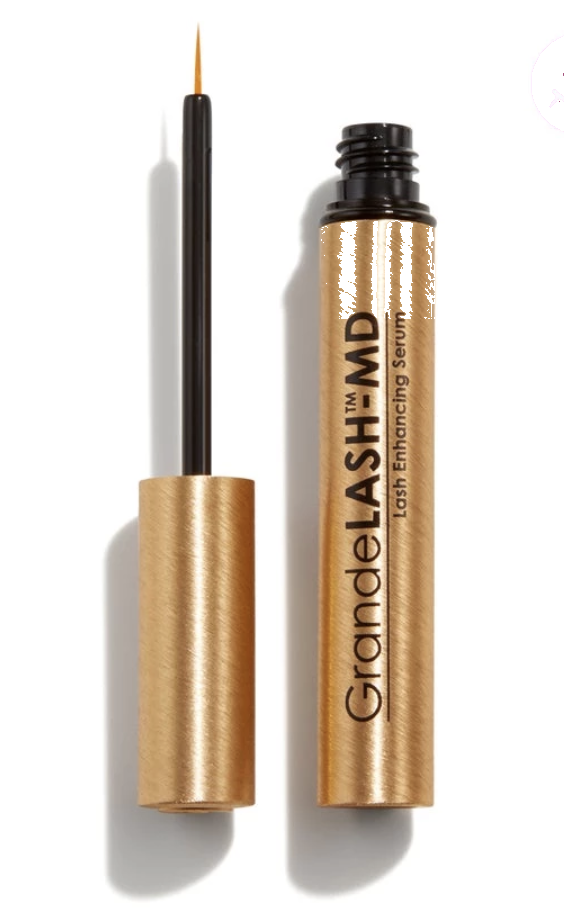
СОДЕРЖИТ простагландин: GrandeLASH-MD сам открыто указывает «This cosmetic product contains (a small amount of) isopropyl cloprostenate, an analog of prostaglandin.»
БЕЗОПАСНА: Корейская формула без простагландинов. pH 7.0 (как натуральные слёзы). Прошла дерматологические тесты. Подходит при сухом глазе и блефарите.
Рынок:Корея (#1 сыворотка для ресниц), Olive Young, YesStyle, Amazon. В Россию — через маркетплейсы.
2.7
Toplash Lash & Brow Booster ? Под вопросом
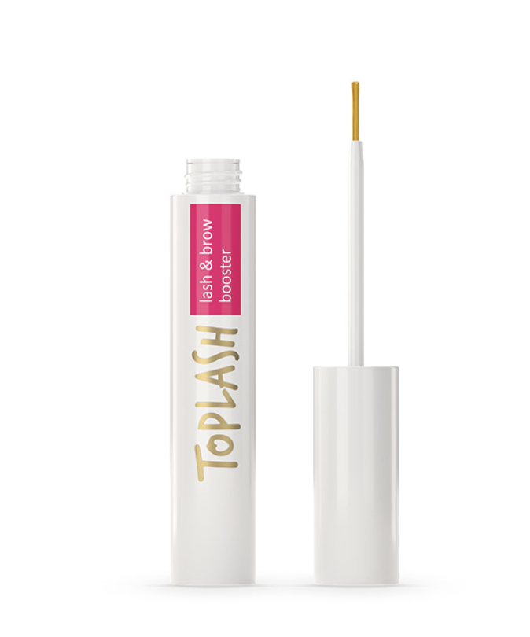
⚠️ ПОД ВОПРОСОМ: Производитель официально заявляет об отсутствии простагландинов и гормональных компонентов в составе. Однако часть покупателей в отзывах описывает побочные эффекты, характерные именно для простагландиновых сывороток: потемнение кожи вокруг глаз, ощущение «западания» орбитальной зоны, выраженный эффект отмены. Полный INCI-состав некоторых партий не раскрывается публично. До официального подтверждения независимым анализом рекомендуется применять с осторожностью.
Состав: Water, Glycerin, Butylene Glycol, Myristoyl Pentapeptide-17, Biotinoyl Tripeptide-1, Panthenol, Sodium Hyaluronate, Hydrolyzed Keratin (в некоторых версиях), растительные экстракты (Centella, Green Tea), Sorbitol и мягкие стабилизаторы.
Особенность:Пептидная формула стимулирует синтез кератина и мягко продлевает фазу роста без воздействия на простагландиновые рецепторы. Подходит для выхода после GrandeLASH и других простагландиновых сывороток.
Удобство:Тонкий аппликатор-лайнер. Доступна версия 3 ml и XL 6 ml.
Рынок:Европа, Amazon EU, LookFantastic, в РФ — через маркетплейсы.
2.8
Scalp D Beauté Pure Free Eyelash Serum Premium (ANGFA) ✓ Безопасная
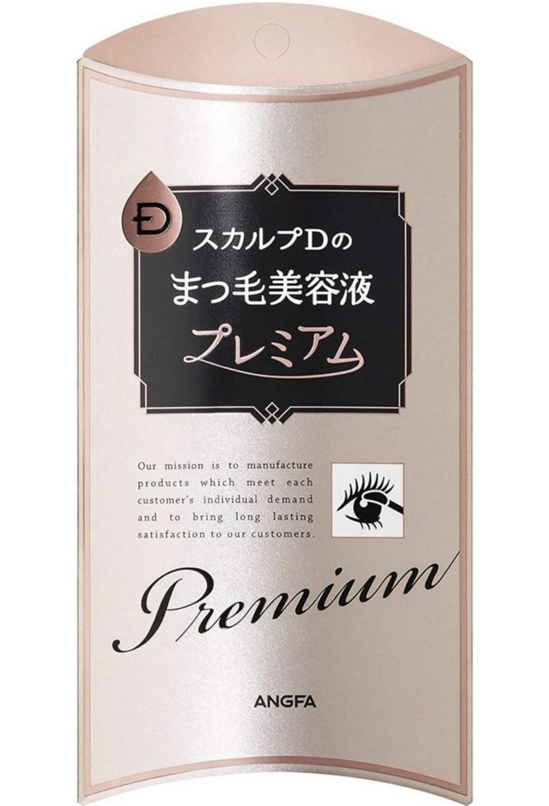
БЕЗОПАСНА и одна из самых сильных среди безопасных: Японская формула без простагландинов — «Pure Free» означает без простагландинов, без парабенов, без спирта, без красителей и без отдушек. По результатам клинических испытаний входит в число наиболее эффективных безопасных сывороток на рынке. Лидер продаж в Японии — стране с высочайшими стандартами косметической безопасности.
Механизм:Пептидный комплекс активирует фолликулы, экстракт горечавки (Swertia japonica) стимулирует микроциркуляцию, хвощ укрепляет структуру волоса природным кремнием.
Особенность:Минималистичная чистая формула — максимальная переносимость для чувствительных глаз. Не содержит ни одного потенциально раздражающего компонента.
Эффект отмены:Нет. Пептиды работают физиологично, не перепрограммируя гормональный цикл роста.
БЕЗОПАСНА: Полностью растительная, веганская формула без простагландинов, без биматопроста и аналогов. Официально сертифицирована как чистая косметика (clean beauty). Подходит для веганов и аллергиков.
Ключевые ингредиенты: Karmatin™ (биоидентичный растительный кератин из маша / mung beans), Nicotinamide (Vitamin B3), Chia Seed Oil (Salvia Hispanica), Red Clover Extract (Trifolium Pratense), Mung Bean Extract, Organic Castor Oil.
Karmatin™:Запатентованный растительный аналог кератина, полученный из маша. Обволакивает и укрепляет ресницу вдоль всей длины, значительно снижает ломкость. Веганская альтернатива животному кератину.
Nicotinamide (B3):Улучшает микроциркуляцию кожи вокруг фолликула, поддерживает клеточный метаболизм. Дополнительно мягко осветляет пигментацию вокруг глаз.
Red Clover Extract:Содержит биоканин А, который блокирует DHT — гормон, ответственный за выпадение волос. Часть комплекса CAPIXYL.
Эффект отмены:Нет. Растительные компоненты действуют питающе и укрепляюще, без гормонального воздействия на фолликул.
Рынок:США, Sephora, Ulta, vegamour.com. Доступна через международные интернет-магазины.
2.10
REVIVE7 Plus Lash Serum ✓ Безопасная
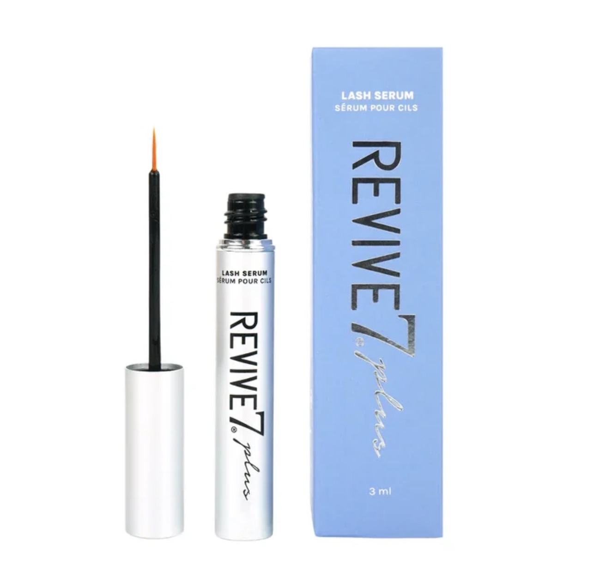
БЕЗОПАСНА: Канадская формула без простагландинов. Мультипептидный комплекс с клинически подтверждённым действием — 93% участниц клинического исследования отметили улучшение густоты и длины ресниц за 30 дней применения.
Версия «Plus»:Усиленная формула с добавлением Oligopeptide-2 (эпидермального фактора роста) для более быстрого и выраженного результата по сравнению с оригинальным REVIVE7.
Аппликатор:Ультратонкая кисточка-лайнер позволяет точно наносить по линии роста верхних и нижних ресниц.
Рынок:Канада, США, Amazon. Доступна через международные маркетплейсы.
2.11
Olaplex Lashbond Building Serum ✓ Безопасная
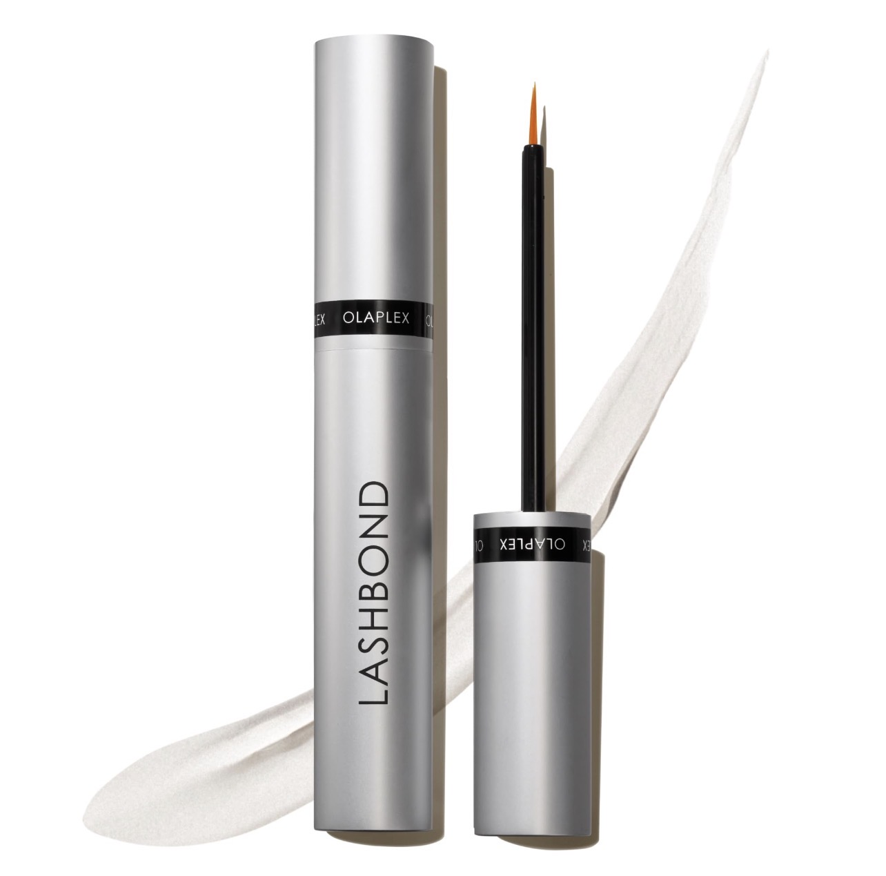
БЕЗОПАСНА: Не содержит простагландинов. Уникальная запатентованная bond-building технология — та же система восстановления дисульфидных связей, что используется в Olaplex для волос, адаптированная специально для ресниц.
Bond Building:Bis-Aminopropyl Diglycol Dimaleate восстанавливает разорванные дисульфидные связи внутри структуры волоса — ресница становится прочнее, эластичнее, значительно снижается ломкость.
Механизм:Работает на структурном уровне: не стимулирует рост через фолликул, а укрепляет уже существующий волос. Особенно полезно для ресниц, повреждённых после наращивания, химической завивки или длительного применения туши.
Честная оценка:Не даёт выраженного удлинения, но значительно снижает выпадение от ломкости и визуально делает ресницы более полными. Идеален как база под тушь и для восстановления повреждённых ресниц.
Рынок:Sephora, Ulta, olaplex.com, Amazon. Доступна через международные магазины.
БЕЗОПАСНА: Пептидная формула без простагландинов, без парабенов, без сульфатов. Подходит для ресниц и бровей одновременно. Офтальмологически протестирована, подходит для чувствительных глаз.
Пептидный дуэт:Myristoyl Pentapeptide-17 клинически увеличивает длину ресниц, Biotinoyl Tripeptide-1 снижает выпадение и увеличивает плотность на +19% (по данным клинических исследований ингредиента).
Niacinamide (B3):Улучшает питание фолликулов через поддержку микроциркуляции, укрепляет барьер кожи вокруг глаз, мягко осветляет пигментацию.
Удобство:Аппликатор-кисточка позволяет наносить и по линии роста ресниц, и прорисовывать редкие участки бровей. Объём 3 мл.
Рынок:США, Amazon, Walmart. Доступна через международные маркетплейсы.
Раздел 3
Полезные ингредиенты — что должно быть в составе
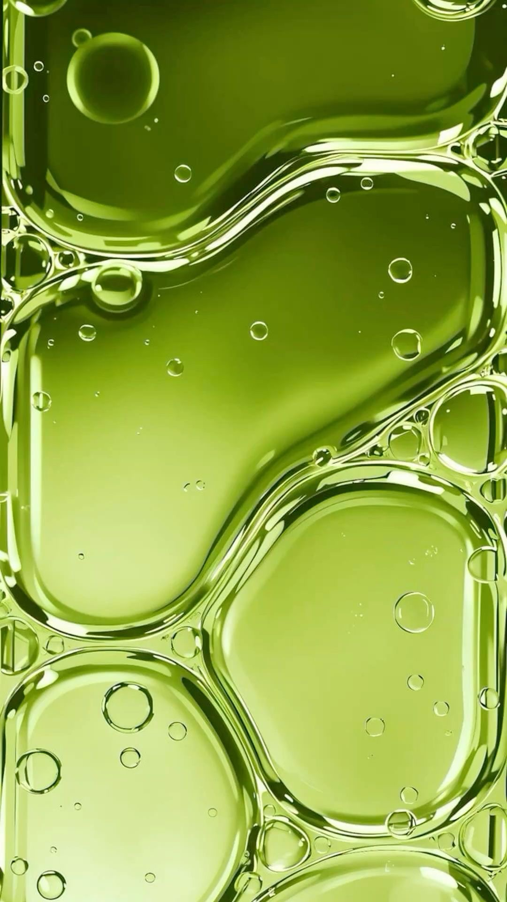
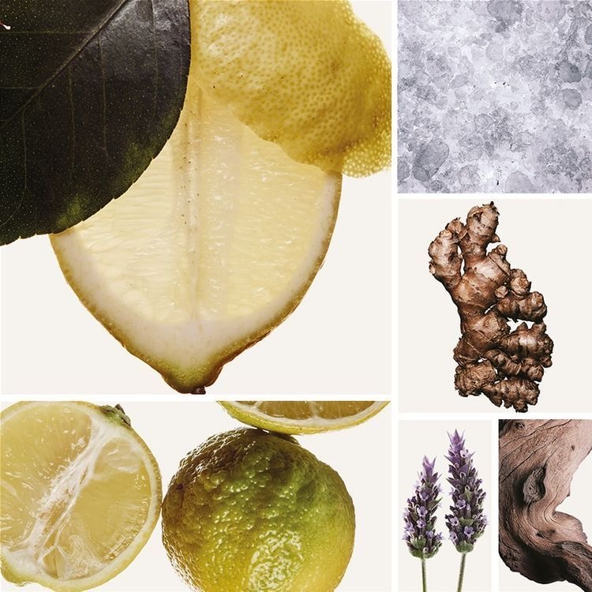
← прокрутите таблицу вправо →
Ингредиент
Эффект
Описание
Myristoyl Pentapeptide-17
Длина + Плотность
Стимулирует выработку кератина. Клинически увеличивает длину ресниц. Содержится в ViveLab, The Ordinary, REVIVE7, Pronexa, Toplash.
Biotinoyl Tripeptide-1 (Capixyl)
Длина + Против выпадения
Комплекс биотина и трипептида. Снижает выпадение на 67% и увеличивает плотность. Результаты через 30 дней.
Acetyl Tetrapeptide-3 + Красный клевер
Плотность + Толщина
Комплекс CAPIXYL. Борется с выпадением, увеличивает плотность. Содержится в The Ordinary.
Copper Tripeptide-1 (GHK-Cu)
Рост + Восстановление
Медный пептид с ранозаживляющими свойствами. Стимулирует деление клеток фолликула, питает корни. Содержится в ViveLab, REVIVE7 Plus.
Oligopeptide-2 (EGF)
Рост + Объём
Эпидермальный фактор роста. Стимулирует пролиферацию кератиноцитов. Входит в REVIVE7 Plus и комплекс Anargy в The Ordinary.
Biotin (Витамин B7)
Прочность
Незаменимый кофактор для производства кератина. Укрепляет структуру волоса. Есть во всех качественных сыворотках.
Panthenol (Витамин B5)
Увлажнение + Против ломкости
Обволакивает ресницы, удерживает влагу. Защищает от ломкости, придаёт гибкость.
Sodium Hyaluronate
Увлажнение
Гиалуроновая кислота. Увлажняет линию роста ресниц, поддерживает здоровую среду для фолликулов.
Улучшает микроциркуляцию в фолликулах ресниц, стимулирует деление клеток.
Castor Oil
Питание + Рост
Богато рицинолевой кислотой. Питает и укрепляет ресницы, препятствует ломкости. Подходит для домашнего ухода.
Red Clover Extract
Против выпадения
Содержит биоканин А — блокирует DHT, ответственный за выпадение волос. Часть комплекса CAPIXYL. Есть в VEGAMOUR GRO.
Масло усьмы
Прочность
Укрепляет фолликулы, пробуждает «спящие» луковицы, питает кожу и восстанавливает структуру волос.
Karmatin™ (Mung Bean Keratin)
Прочность + Покрытие
Запатентованный растительный биоидентичный кератин из маша. Обволакивает ресницу по всей длине, снижает ломкость, придаёт блеск. Веганский аналог животного кератина. Содержится в VEGAMOUR GRO.
Nicotinamide / Niacinamide (B3)
Питание фолликулов + Пигментация
Улучшает микроциркуляцию кожи вокруг линии роста ресниц, поддерживает клеточный метаболизм. Дополнительно осветляет гиперпигментацию вокруг глаз, вызванную простагландинами. Содержится в VEGAMOUR GRO, Pronexa Lavish Lash.
Bis-Aminopropyl Diglycol Dimaleate
Восстановление структуры волоса
Запатентованный bond builder Olaplex. Восстанавливает разорванные дисульфидные связи внутри стержня ресницы — делает волос прочнее, снижает ломкость от механических повреждений. Содержится в Olaplex Lashbond.
Swertia Japonica Extract
Стимуляция роста
Японский экстракт горечавки. Усиливает микроциркуляцию в коже вокруг фолликула, активирует спящие луковицы. Традиционно применяется в японской косметике. Содержится в Scalp D Beauté Premium.
Sarsasapogenin (Volufiline)
Восстановление орбитального жира
Активный ингредиент France Sederma. Стимулирует адипогенез — увеличивает объём жировых клеток (адипоцитов). Применяется для восстановления орбитального жира, утраченного вследствие длительного применения простагландиновых сывороток («запавшие глаза»).
Vitamin C 5% (L-Ascorbic Acid)
Осветление + Восстановление кожи
Мощный антиоксидант. Тормозит синтез меланина, осветляя гиперпигментацию вокруг глаз после простагландинов. Стимулирует синтез коллагена, улучшает упругость кожи. Содержится в Paula's Choice C5 Super Boost Eye Cream.
3.1 По задачам — что искать в составе
Для удлинения ресниц:
Myristoyl Pentapeptide-17 — клинически увеличивает длину
Myristoyl Hexapeptide-16 — в связке с Pentapeptide-17
Oligopeptide-2 (EGF) — эпидермальный фактор роста, ускоряет деление клеток фолликула
Isopropyl Cloprostenate — максимальный эффект, но с рисками
Bimatoprost (только Latisse, рецепт)
Для увеличения толщины и объёма:
Keratin / Karmatin™ — структурный белок ресниц (животный или растительный)
Biotinoyl Tripeptide-1 (Capixyl) — +19% толщины в исследованиях
Acetyl Tetrapeptide-3 + Red Clover — комплекс CAPIXYL
Red Clover Extract (Karmatin GRO) — биоканин А против DHT
Oligopeptide-2 (EGF) — фактор роста, стимулирует деление клеток
Copper Tripeptide-1 — укрепляет фолликул
Biotin (B7) — дефицит биотина = выпадение
Для восстановления после побочных эффектов простагландинов:
Nicotinamide / Niacinamide (B3) — против гиперпигментации вокруг глаз
Vitamin C 5% — осветление потемневшей кожи вокруг глаз, синтез коллагена
Sarsasapogenin (Volufiline) — восстановление орбитального жира при «запавших глазах»
Sodium Hyaluronate — восстановление увлажнения и здоровья кожи
Polypeptides — восстановление упругости и тонуса кожи вокруг глаз
ПРАВИЛО: Лучшие безопасные сыворотки содержат несколько пептидных комплексов одновременно, работающих по разным механизмам. The Ordinary использует 4 разных пептидных технологии в одном флаконе.
Раздел 4
Бренды с простагландинами — список опасных
Все перечисленные ниже бренды содержат простагландиновые аналоги (Isopropyl Cloprostenate или его аналоги). Они работают, но имеют эффект отмены и потенциальные риски.
4.1 Рынок США — содержат простагландины:
GrandeLASH-MD — Isopropyl Cloprostenate (сами признают в составе)
Mavala Double Lash (проверяйте состав) — некоторые версии содержат
В ЕС простагландиновые аналоги находятся в серой зоне: они не запрещены явно как косметические ингредиенты, но FDA (США) и ряд европейских регуляторов требуют предупреждений. Некоторые страны ограничивают их продажу.
SOME BY MI Lash Serum — K-beauty пептидная формула
5.3 Россия / Европа — безопасные:
The Ordinary Multi-Peptide Lash & Brow — доступна в Goldapple
Toplash — для стимуляции роста, укрепления, увеличения длины и густоты ресниц и бровей
Lola's Lashes Lash Serum — европейская пептидная формула
Terez & Honor Lash Enhancing Serum — безопасный состав
Hairenew (Россия) — отечественная формула с пептидами
Велла / Wella Luxeoil — для питания и укрепления
СОВЕТ ДЛЯ РОССИЙСКОГО РЫНКА: Если вы покупаете через маркетплейсы (Wildberries, Ozon), всегда смотрите полный INCI-состав. Ищите слово «prost» — если оно есть в названии любого ингредиента, это простагландин. Покупайте у проверенных продавцов — изучайте отзывы перед покупкой.
Раздел 6
Инструкция по применению сывороток
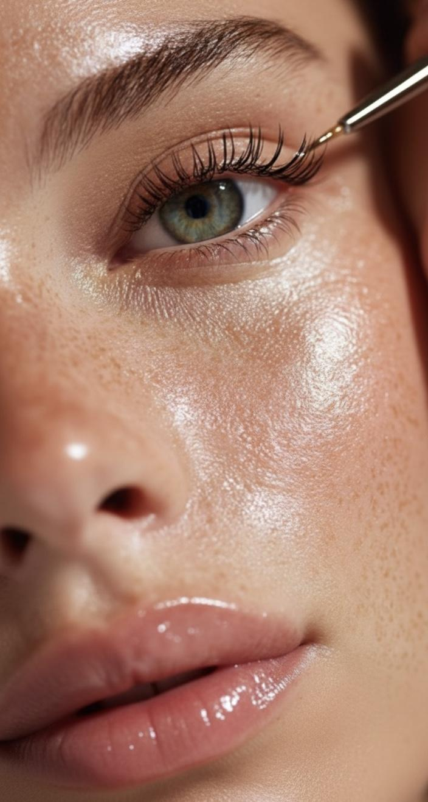
6.1 Простагландиновые сыворотки (если вы всё-таки выбрали их)
Наносите 1 раз в день — вечером на чистую кожу
Только по линии роста верхних ресниц — тонкой линией, как подводка
НЕ наносите на нижнее веко (жир вокруг глаз может атрофироваться)
Используйте минимальное количество — 1 погружение кисточки на оба глаза
Прекращайте при первых признаках раздражения или изменения пигментации
После достижения результата переходите на режим 2–3 раза в неделю
Не применяйте при беременности, кормлении, глаукоме, сухом глазе
ВАЖНО ПРО ОТМЕНУ: Если вы уже используете простагландиновую сыворотку и хотите перейти на безопасную — не бросайте резко. Переходите постепенно: через день чередуйте с безопасной, затем переходите полностью.
6.2 Пептидные сыворотки (безопасные)
Наносите 1–2 раза в день (утро + вечер) для лучшего результата
По линии роста ресниц тонкой полосой
Можно наносить и на нижние ресницы
Первые результаты — через 4–6 недель
Для поддержания — продолжайте использование после достижения цели
Можно использовать под тушь
Подходят при ношении контактных линз
Безопасные пептидные сыворотки наносят в течение 8–12 недель — это основной курс для заметного эффекта. После достижения результата переходят на режим поддержки 3–5 раз в неделю; такие сыворотки можно использовать длительно без риска эффекта отмены.
6.3 Общие правила
Всегда наносить на чистую, сухую кожу — после умывания, до крема
Снять контактные линзы перед нанесением (установить обратно через 15 минут)
Дать высохнуть 2–3 минуты перед нанесением других продуктов
Не тереть глаза после нанесения
Хранить в прохладном месте, вдали от солнца
Срок использования после вскрытия — обычно 6–12 месяцев
Схема выхода с простагландиновых сывороток
Схема выхода с GrandeLASH, RevitaLash, RapidLash и др. — чтобы минимизировать откат и массовое выпадение.
1
Этап 1 · 2 недели
Снижение частоты
Цель: не допустить синхронного перехода ресниц в фазу выпадения.
Простагландиновая сыворотка — 3 раза в неделю (через день)
Дополнительно: лёгкое масло (касторовое или аргановое) 2–3 раза в неделю вечером
2
Этап 2 · 2 недели
Мягкое сокращение
Простагландиновая сыворотка — 1–2 раза в неделю
Пептидная сыворотка — ежедневно
Поддержка: омега-3 и достаточный белок в рационе
3
Этап 3 · с 5-й недели
Полная отмена
Простагландин полностью убрать
Пептидную сыворотку продолжать ежедневно минимум 8–12 недель
Масло можно оставить 2 раза в неделю как питание
4
Этап 4 · 2–3 месяц
Стабилизация
Пептидная сыворотка — 5 раз в неделю
Далее — режим поддержки 3–4 раза в неделю
Что важно понимать
Небольшой откат длины (20–30%) — нормален
Массовое выпадение чаще происходит при резкой отмене
Новый естественный цикл стабилизируется через 6–8 недель
Полное восстановление натурального цикла — до 3 месяцев
Чего нельзя делать
Резко прекращать в один день
Чередовать разные простагландиновые формулы
Наносить на воспалённое веко
Использовать вместе с ретиноидами по линии роста
Крема и сыворотки для устранения побочных эффектов
После длительного применения простагландиновых сывороток могут возникнуть два наиболее частых побочных эффекта — гиперпигментация кожи вокруг глаз (потемнение) и потеря орбитального жира (эффект «запавших» или «ввалившихся» глаз). Для устранения каждого из этих эффектов существуют специфические продукты.
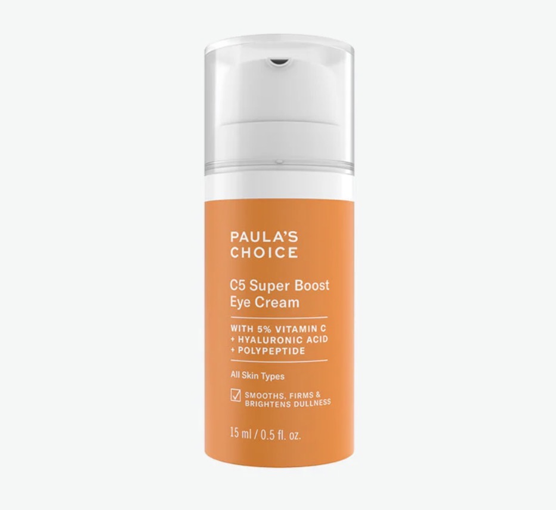
Paula's Choice C5 Super Boost Eye Cream
Крем для глаз с 5% витамином С + гиалуроновой кислотой + полипептидами. Показание: гиперпигментация, потемнение кожи вокруг глаз после простагландинов.
Ключевые активы:5% Vitamin C (L-Ascorbic Acid) — тормозит выработку меланина, осветляет пигментные пятна и неравномерный тон. Hyaluronic Acid — глубокое восстанавливающее увлажнение. Polypeptides — упругость и тонус кожи вокруг глаз.
Как наносить:Утром — нанесите небольшое количество на область под глазами и верхнее веко (не по линии роста ресниц) лёгкими промокательными движениями кончиком безымянного пальца. Дайте впитаться 1–2 минуты, затем нанесите SPF — витамин С без защиты от УФ не даст эффекта по пигментации.
Режим применения:Ежедневно утром. В вечернее время можно заменить на увлажняющий крем для кожи вокруг глаз без активных кислот.
Длительность курса:Первые заметные результаты осветления — через 8–12 недель регулярного применения. Поддерживающий режим до полного выравнивания тона — 3–6 месяцев. Не прерывайте резко: витамин С даёт накопительный эффект.
Важно:Хранить в тёмном прохладном месте — витамин С окисляется на свету и в тепле. Если крем заметно пожелтел или потемнел — заменить. Не допускать попадания в глаза. На чувствительной коже возможно лёгкое покалывание — это норма.
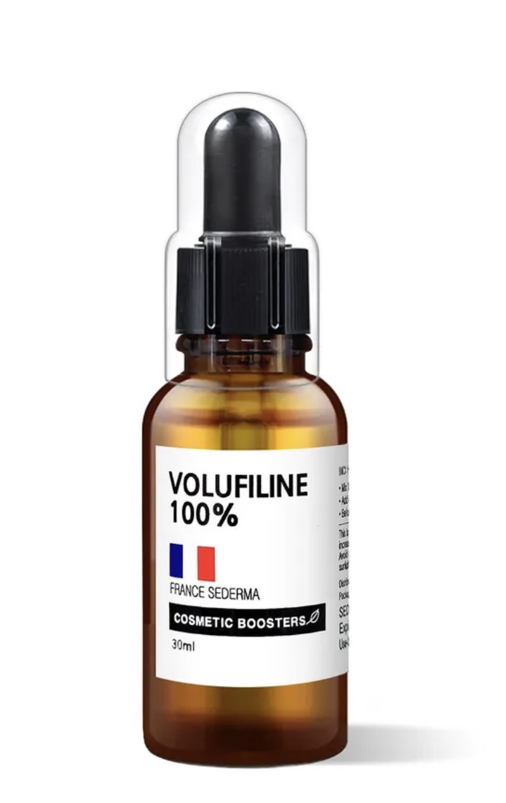
Volufiline 100% (France Sederma / Cosmetic Boosters)
Концентрированный активный ингредиент на основе сарсасапогенина, 30 мл. Показание: потеря орбитального жира, эффект «запавших» или «ввалившихся» глаз после длительного применения простагландинов.
Механизм действия:Sarsasapogenin (из Anemarrhena asphodeloides) стимулирует адипогенез — процесс образования и увеличения объёма жировых клеток (адипоцитов). Позволяет постепенно восполнить орбитальный жир, утраченный вследствие воздействия простагландинов на жировую ткань вокруг глазницы.
Как применять:Volufiline — концентрированный бустер, а не готовый крем. Добавьте 2–5 капель в вашу порцию ежедневного крема для глаз или лёгкого увлажняющего крема и смешайте на ладони. Нанесите смесь на орбитальную область — по костному краю под глазом и на висок — лёгкими промокательными движениями. Не наносить непосредственно на слизистую глаза.
Режим применения:Утром и вечером — добавлять в базовый крем для глаз. Начните с 2 капель на одну порцию крема, при хорошей переносимости можно увеличить до 4–5 капель.
Длительность курса:Первые изменения (лёгкий «наполненный» вид орбитальной зоны) — через 6–8 недель. Выраженный результат — через 3–6 месяцев непрерывного применения. Это медленный, но физиологичный процесс: жировая ткань восстанавливается постепенно. Использовать непрерывно до достижения желаемого результата.
Важно:Volufiline не заменяет пептидную сыворотку для ресниц — применяйте параллельно. Продукт безопасен при длительном применении. Флакон 30 мл при режиме 2–4 капли в день хватает приблизительно на 3–4 месяца.
Комплексный протокол восстановления после простагландинов:
Утро: пептидная сыворотка для ресниц (по линии роста) → Paula's Choice C5 Eye Cream (вокруг глаз) → SPF на всё лицо.
Вечер: пептидная сыворотка для ресниц (по линии роста) → увлажняющий крем для глаз с 2–5 каплями Volufiline (вокруг глаз).
Минимальный курс — 3 месяца. Полное восстановление орбитальной зоны и выравнивание пигментации — до 6 месяцев.
Рекомендация. Проверьте сыворотку через ChatGPT или иной ИИ. Сфотографируйте полный состав (INCI) на упаковке или коробке и проанализируйте состав. Важно, чтобы был виден весь список ингредиентов.